Act one only gets the character moving
Act one does not need a world bible. It needs three things: what this person wants, what blocks them, and what they decide to do. End on an action, not an explanation.
A short film should finish this in its first quarter. If the audience still does not know the want halfway through, later beauty is just pictures.
Act two: add pressure, not characters
Act two is where most short films break: new characters, new subplots, new twists. A short does not need more stuff; it needs the same obstacle to get harder to avoid.
The midpoint changes the method: ask for help, lie, compromise, fight back. When the method changes, the pressure actually rises.
Act three answers one question
Act three answers one question: what is he willing to pay. Do not introduce new information, characters, or locations. The ending can be a win or a loss, but not a blur.
End after the choice, without a voice-over summary. The sentence the audience supplies is stronger than the one you write.
Three acts: one turn, not three parts

Image note. Covers, diagrams and step images on this page are editorial illustrations or structure diagrams, not photographs of a test performed here; they are not evidence of measured gear performance. Where an image is AI-assisted, the caption says so. Read the test conditions in the text before treating an image as proof.